Gradient boosting: Distance to target
Terence Parr and Jeremy
Howard
Please send comments, suggestions, or fixes to Terence.
An introduction to additive modeling
Before we get into boosting, let's look at an example of what mathematicians call additive modeling because it is the foundation of boosting. The idea is quite simple: we are going to add a bunch of simple terms together to create a more complicated expression. In the machine learning world, that expression (function) represents a model mapping some observation's feature, x, to a scalar target value, y. It's a useful technique because we can often conjure up the simple terms more easily than cracking the overall function in one go. Consider the following curve that shows y as some unknown but nontrivial function of x.
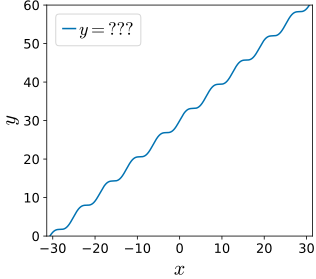
Let's assume that the function is composed of several simple terms and try to guess what they are. After adding each term, we can reassess the situation to help us figure out the next term to add by considering the difference between the current combined function and the desired target function.
Our first approximation might be the horizontal line y=30 because we can see that the y-intercept (at x=0) is 30. Check out the first plot in the following graph sequence. Naturally, the slope is wrong so we should add in the 45 degree line 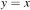 (with slope 60/60=1) that runs through the squiggly target function, which gives us the second graph. It turns out that the squiggly bit comes from our friend the sine function so we can add that term, which leads us to the final plot matching our target function:
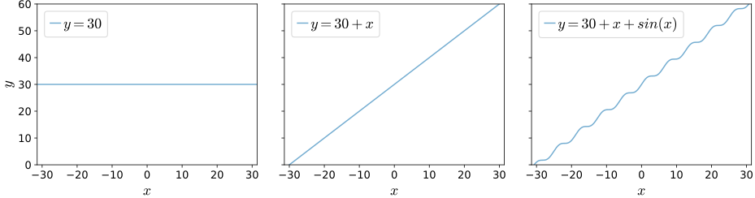
Decomposing a complicated function into simpler subfunctions is nothing more than the divide and conquer strategy that we programmers use all the time. In this case, we are dividing a potentially very complicated function into smaller, more manageable bits. For example, let's call our target function 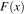 then we have 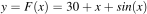 and can abstract away the individual terms, also as functions, giving us the addition of three subfunctions:
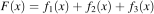
where:
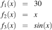
More generally, mathematicians describe the decomposition of a function into the addition of M subfunctions like this:
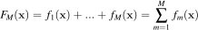
The sigma 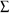 notation is a for-loop that iterates m from 1 to M, accumulating the sum of the subfunction, fm, results.
In the machine learning world, we're given a set of 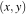 data points rather than a continuous function, as we have here. The goal is to create a function that draws a nice curve through the data points. We call that function a model and it maps x to y, thus, making predictions given some unknown x. Adding up a bunch of subfunctions to create a composite function that models some data points is then called additive modeling. Gradient boosting machines use additive modeling to gradually nudge an approximate model towards a really good model, by adding simple submodels to a composite model.
An introduction to boosted regression
Boosting is a loosely-defined strategy that combines multiple simple models into a single composite model. The idea is that, as we introduce more simple models, the overall model becomes a stronger and stronger predictor. In boosting terminology, the simple models are called weak models or weak learners.
In the context of regression, we make numerical predictions, such as rent prices, based upon information, such as square footage, about an entity (an observation). To keep things simple in this article, we'll work with a single feature per entity but, in general, each observation has a vector of features; let's call it  . Given , we'd like to learn scalar target value y for a bunch of
. Given , we'd like to learn scalar target value y for a bunch of  pairs. Training a regression model is a matter of fitting a function through the data points as best we can. Given a single feature vector and scalar target value y for a single observation, we can express a composite model that predicts (approximates)
pairs. Training a regression model is a matter of fitting a function through the data points as best we can. Given a single feature vector and scalar target value y for a single observation, we can express a composite model that predicts (approximates)  as the addition of M weak models 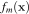:
as the addition of M weak models 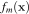:
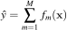
Mathematicians represent both the weak and composite models as functions, but in practice the models can be anything including k-nearest-neighbors or regression trees. Since everyone uses trees for boosting, we'll focus on implementations that use regression trees for weak models, which also happens to greatly simplify the mathematics. Later, we'll stack N feature vectors as rows in a matrix, 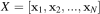, and N targets into a vector, 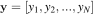 for N observations.
It's often the case that an additive model can build the individual terms independently and in parallel, but that's not the case for boosting. Boosting constructs and adds weak models in a stage-wise fashion, one after the other, each one chosen to improve the overall model performance. The boosting strategy is greedy in the sense that choosing never alters previous functions. We could choose to stop adding weak models when  's performance is good enough or when doesn't add anything. In practice, we choose the number of stages, M, as a hyper-parameter of the overall model. Allowing M to grow arbitrarily increases the risk of overfitting.
's performance is good enough or when doesn't add anything. In practice, we choose the number of stages, M, as a hyper-parameter of the overall model. Allowing M to grow arbitrarily increases the risk of overfitting.
Because greedy strategies choose one weak model at a time, you will often see boosting models expressed using this equivalent, recursive formulation:
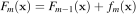
That says we should tweak the previous model with to get the next model.
Boosting itself does not specify how to choose the weak learners. Boosting does not even specify the form of the models, but the form of the weak model dictates the form of the meta-model. For example, if all weak models are linear models, then the resulting meta-model is a simple linear model. If we use tiny regression trees as the weak models, the result is a forest of trees whose predictions are added together.
Let's see if we can design a strategy for picking weak models to create our own boosting algorithm for a single observation. Then, we can extend it to work on the multiple observations we'd encounter in practice.
The intuition behind gradient boosting
To construct a boosted regression model, let's start by creating a crappy model, 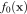, that predicts an initial approximation of y given feature vector . Then, let's gradually nudge the overall model towards the known target value y by adding one or more tweaks, :
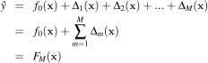
Or, using a recurrence relation, let:
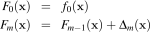
It might be helpful to think of this boosting approach as a golfer initially whacking a golf ball towards the hole at y but only getting as far as . The golfer then repeatedly taps the ball more softly, working the ball towards the hole, after reassessing direction and distance to the hole at each stage. The following diagram illustrates 5 strokes getting to the hole, y, including two strokes, 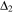 and , that overshoot the hole. (Golfer clipart from http://etc.usf.edu/clipart/)

After the initial stroke, the golfer determines the appropriate nudge by computing the difference between y and the first approximation, 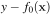. (We can let be the hole number 1-18, but it doesn't really matter since we're only working with one observation for illustration purposes.) This difference is usually called the residual or residual vector, but it's helpful for gradient boosting to think of this as the vector pointing from the current prediction, 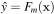, to the true y. (In the second article, we will look at just the sign of the direction, not magnitude; we'll call that the sign vector to distinguish from the residual vector.) Using the residual vector as our nudge, means training  on value
on value  for our base weak models. As with any machine learning model, our 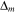 models will not have perfect recall and precision, so we should expect to give a noisy prediction instead of exactly .
for our base weak models. As with any machine learning model, our 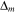 models will not have perfect recall and precision, so we should expect to give a noisy prediction instead of exactly .
As an example, let's say that the hole is at y=100 yards, 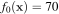. Manually boosting, we might see a sequence like the following, depending on the imprecise strokes made by the golfer:
A GBM implementation would also support a so-called learning rate,  , that speeds up or slows down the overall approach of to y, which helps to reduce the likelihood of overfitting.
, that speeds up or slows down the overall approach of to y, which helps to reduce the likelihood of overfitting.
To show how flexible this technique is, consider training the weak models on just the direction of y, rather than the magnitude and direction of y. In other words, we would train the on 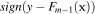, not . The 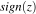 (or 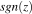) function expresses the direction as one of 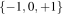, but both 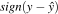 and 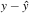 point us in suitable directions. We'll see in Gradient boosting performs gradient descent that training on the residual vector optimizes the overall model for the squared error loss function and training on the sign vector optimizes the absolute error loss function.
If you understand this golfer example, then you understand the key intuition behind boosting for regression, at least for a single observation. Yup, that's it, but there are several things to reinforce before moving on:
- The weak models learn direction vectors with direction information, not just magnitudes.
- The initial model is trying to learn target y given , but the tweaks are trying to learn direction vectors given .
- All weak models, and , train on direction vectors that are some function of the original feature vectors, .
- Two common direction vector choices are the residual, 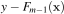, and the sign,
 .
.
Let's walk through a concrete example to see what gradient boosting looks like on more than one observation.
Gradient boosting regression by example
Imagine that we have square footage data on five apartments and their rent prices in dollars per month as our training data:
where row i is an observation with one-dimensional feature vector 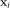 (bold ) and target scalar value yi. Matrix holds all feature vectors and 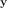 (bold ) is the entire rent vector . 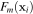 yields a predicted value but yields a predicted target vector, one value for each .
From this data, we'd like to build a GBM to predict rent price given square footage. To move towards from any 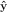, we need a direction vector. Let's start with  and then, in Heading in the right direction, we'll see how GBM works for
and then, in Heading in the right direction, we'll see how GBM works for  .
.
Let's use the mean (average) of the rent prices as our initial model: 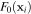 = 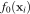 = 1200 for all i: 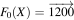. We use the mean because that is the single value that minimizes the mean squared error between it and the yi values. (We'll seen shortly that GBMs whose weak models are trained on residual vectors optimize the mean squared error.) Once we have 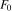, we compute 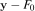, the residual between the target and the previous estimate:
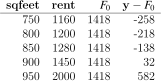
(Many articles and Friedman's original paper call the 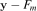 values pseudo-responses and use notation 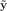.)
The last column shows not only the direction but the magnitude of the difference between where we are, , and where we want to go, . The red vectors in the following diagram are a visualization of the residual vectors from our initial model to the rent target values.
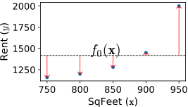
Next, we train a weak model, , to predict that residual vector given for all i observations. A perfect model, , would yield exactly 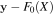, meaning that we'd be done after one step since 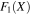 would be 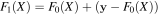, or just . Because it imperfectly captures that difference, is still not quite , so we need to keep going for a few stages. Let's add learning rate, , to our recurrence relation:
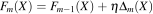
We'll discuss the learning rate below, but for now, please assume that our learning rate is 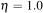, so 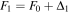, , and so on. The following table summarizes the intermediate values of the various key “players”:
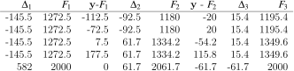
It helps to keep in mind that we are always training on the residual vector  but get imperfect model . The best way to visualize the learning of
but get imperfect model . The best way to visualize the learning of  residual vectors by weak models, , is by looking at the residual vectors and model predictions horizontally on the same scale Y-axis:
residual vectors by weak models, , is by looking at the residual vectors and model predictions horizontally on the same scale Y-axis:
The blue dots are the residual vector elements used to train weak models, the dashed lines are the predictions made by , and the dotted line is the origin at 0. Notice how the residual vector elements (blue dots) get smaller as we add more weak models.
The predictions are step functions because we've used a regression tree stump as our base weak model with split points 925, 825, and 925. Here are the three stumps implementing our weak models:

Regression tree stumps
A regression tree stump is a regression tree with a single root and two children that splits on a single (feature) variable, which is what we have here, at a single threshold. (If we had more than a single value in our feature vectors, we'd have to build a taller tree that tested more variables; to avoid overfitting, we don't want very tall trees, however.) If a test feature value is less than the threshold, the model yields the average of the training target samples in the left leaf. If the test feature value is greater than or equal to the threshold, the model yields the average of the training target examples in the right leaf.
The feature value split location is chosen to minimize the variance of the target elements in each group. For example, imagine single-valued features for 5 observations and target values . A good place to split the feature values is between 1 and 4. That means separating target values in the two leaves into very similar groups: and .
The composite model sums together all of the weak models so let's visualize the sum of the weak models:
If we add all of those weak models to the initial average model, we see that the full composite model is a very good predictor of the actual rent values:
It's worth pointing out something subtle with the learning rate and the notation used in the graphs: . That makes it look like the learning rate could be applied all the way at the end as a global learning rate. Mathematically, the formula is correct but it hides the fact that each weak model, , is trained on and is a function of the learning rate: . Friedman calls this incremental shrinkage.
Measuring model performance
How good is our model? To answer that, we need a loss or cost function, or , that computes the cost of predicting  instead of . The loss across all N observations is just the average (or the sum if you want since N is a constant once we start training) of all the individual observation losses:
instead of . The loss across all N observations is just the average (or the sum if you want since N is a constant once we start training) of all the individual observation losses:
The mean squared error (MSE) is the most common, and what we are optimizing in this article:
In the final article, Gradient boosting performs gradient descent we show that training our on the residual vector leads to a minimization of the mean squared error loss function.
Choosing hyper-parameters
We've discussed two GBM hyper-parameters in this article, the number of stages M and the learning rate . Both affect model accuracy. The more stages we use, the more accurate the model, but the more likely we are to be overfitting. The primary value of the learning rate, or “shrinkage” as some papers call it, is to reduce overfitting of the overall model. As Chen and Guestrin say in XGBoost: A Scalable Tree Boosting System, “shrinkage reduces the influence of each individual tree and leaves space for future trees to improve the model.” Friedman recommends a low learning rate like 0.1 and a larger number of stages. In practice, people do a grid search over the hyper-parameter space looking for the best model performance. (Grid search can be very expensive given all of the model construction involved.) For example, see the article by Aarshay Jain: Complete Guide to Parameter Tuning in XGBoost or the article by Jason Brownlee called Tune Learning Rate for Gradient Boosting with XGBoost in Python.
The following graph shows how the mean squared error changes as we add more weak models, illustrated with a few different learning rates.
A value of looks like it reaches the minimum error at the last stage, , so that might be a good starting point for the learning rate.
We stopped at for purposes of a simple explanation of how boosting works. As we said, practitioners often use a grid search to optimize hyper-parameters, such as M, but one could also keep adding stages until performance stops improving. The risk in that case would be overfitting the model.
As a side note, the idea of using a learning rate to reduce overfitting in models that optimize cost functions to learn, such as deep learning neural networks, is very common. Rather than using a constant learning rate, though, we could start the learning rate out energetically and gradually slow it down as the model approached optimality; this proves very effective in practice.
Ok, let's tie all of this together. A gradient boosting regression model, , adds together an initial weak model, , that predicts the average value, and the predictions of M weak models, , that nudge towards . Each is trained on a residual vector that measures the direction and magnitude of the true target from the previous model, . The new prediction is the addition of the previous model and a nudge, , multiplied by a learning rate: . Hyper-parameters and M are determined by grid search.
 If you more-or-less followed this discussion, then congratulations! You understand the key elements of gradient boosting for regression. That's all there is to it. Really. As we'll see in the next article, Gradient boosting: Heading in the right direction, we can use a different direction vector than the residual, but the basic mechanism is the same. Using the sign of the residual rather than the residual vector itself, will have the effect of minimizing a different loss function than mean squared error (it'll minimize mean absolute value).
If you more-or-less followed this discussion, then congratulations! You understand the key elements of gradient boosting for regression. That's all there is to it. Really. As we'll see in the next article, Gradient boosting: Heading in the right direction, we can use a different direction vector than the residual, but the basic mechanism is the same. Using the sign of the residual rather than the residual vector itself, will have the effect of minimizing a different loss function than mean squared error (it'll minimize mean absolute value).
You might've heard that gradient boosting is very complex mathematically, but that's only if we care about generalizing gradient boosting to work with any loss function (with associated direction vector), rather than the two we discuss in the first two articles of this series (residual and sign vectors). If you want to get funky with the math and see the cool relationship of gradient boosting with gradient descent, check out our last article in the series, Gradient boosting performs gradient descent. Also check out the next article, Gradient boosting: Heading in the right direction that goes through this example again but this time training weak models on the sign of the residual not the residual vector.
GBM algorithm to minimize L2 loss
For completeness, here is the boosting algorithm, adapted from Friedman's LS_Boost and LAD_TreeBoost, that optimizes the  loss function using regression tree stumps:
loss function using regression tree stumps:
![{\small
\begin{tabular}[t]{lllll}
{\bf Stage} &{\bf Boosted}&{\bf Model}&{\bf Train} $\Delta_m$&{\bf Noisy}\vspace{-1mm}\\
$m$& {\bf Model} & {\bf Output} $\hat y$ & {\bf on} $y - F_{m-1}$ & {\bf Prediction} $\Delta_m$\\
\hline
0 & $F_0$ & 70 \\
1 & $F_1 = F_0 + \Delta_1$ & 70+15=85 & 100-70=30 & $\Delta_1$ = 15\\
2 & $F_2 = F_1 + \Delta_2$ & 85+20=105 & 100-85=15 & $\Delta_2$ = 20 \\
3 & $F_3 = F_2 + \Delta_3$ & 105-10=95 & 100-105={\bf -5} & $\Delta_3$ = {\bf -10} \\
4 & $F_4 = F_3 + \Delta_4$ & 95+5=100 & 100-95=5 & $\Delta_4$ = 5 \\
\end{tabular}
}](images/latex-0936C06C9B1327717E490FE17E434573.svg)
![\setlength{\algomargin}{3pt}
\SetAlCapSkip{-10pt}
\begin{algorithm}[H]
\LinesNumbered
\SetAlgorithmName{Algorithm}{List of Algorithms}
\SetAlgoSkip{}
\SetInd{.5em}{.5em}
\TitleOfAlgo{{\em l2boost}($X$,$\vec y$,$M$,$\eta$) {\bf returns} model $F_M$}
Let $F_0(X) = \frac{1}{N}\sum_{i=1}^N y_i$, mean of target $\vec y$ across all observations\\
\For{$m$ = 1 \KwTo $M$}{
Let $\vec r_{m-1} = \vec y - F_{m-1}(X)$ be the residual direction vector\\
Train regression tree $\Delta_m$ on $\vec r_{m-1}$, minimizing squared error\\
$F_m(X) = F_{m-1}(X) + \eta \Delta_m(X)$\\
}
\Return{$F_M$}\\
\end{algorithm}](images/latex-321A7951E78381FB73D2A6874916134D.svg)